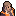
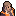
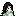

-
 [A lire] Je débute - Partie 1
[A lire] Je débute - Partie 1
-
[A lire] Je débute - Partie 2
-
[A lire] Je débute - Partie 3
-
Carte et terminaux du vaisseau
-
Légendes urbaines et mythes
-
Être mush - Premiers pas
-
Être mush - Tutoriel avancé
-
Compétences, mon compte, klix
-
Logs - Explications
-
Faire du roleplay
-
Guide de Survie (J10+)
-
Frieda - Tutoriel
-
Gioele - Tutoriel
-
Hua - Tutoriel
-
Roland - Tutoriel
-
Chun - Premiers pas
-
Chun - Tutoriel avancé
-
Eleesha - Premiers pas
-
Eleesha - Tutoriel avancé
-
Ian - Premiers pas
-
Ian - Tuto avancé
-
Janice - Premiers pas
-
Janice - Tutoriel avancé
-
Jin Su - Premiers pas
-
Jin Su - Tutoriel avancé
-
Kuan Ti - Premiers pas
-
Kuan Ti - Tutoriel avancé
-
Paola - Premiers pas
-
Paola - Tutoriel avancé
-
Raluca - Premiers pas
-
Raluca - Tutoriel avancé
-
Stephen - Premiers pas
-
Stephen - Tutoriel avancé
-
Terrence - Premiers Pas
-
Terrence - Tutoriel avancé
-
Finola - Tutoriel
-
Chao - Premiers Pas
-
Chao - Tutoriel avancé
-
Andie - Premiers pas
-
Andie - Tutoriel avancé
-
Derek - Tutoriel
-
Thème : L'astrophysique
-
Thème - La mécanique
-
L'enquête - Premiers pas
-
L'enquête - Avancé
-
Thème - La botanique
-
Recherches, projets et relais.
-
Thème : Le pilotage
-
Thème - Les expéditions
-
Titre : Responsable comm.
-
Titre : Commandant
-
Titre : Administrateur NERON
Finola - Tutoriel
Finola est un personnage relativement important dans le jeu car elle est la plus indiquée pour effectuer des recherches au laboratoire, dans le but d'entraver la progression du mush.
Son Game Play, souvent limité à
la fonction recherche, est donc à la fois simple à appréhender mais
aussi peu varié. Néanmoins avec son background, elle dispose de très
bonnes pistes pour démarrer du Role Play avec plusieurs personnages du
vaisseau, comme  Ian Soulton, Eleesha williams et enfin  Gioele Rinaldo.
Ian Soulton, Eleesha williams et enfin  Gioele Rinaldo.
Selon ses compétences, et les besoins du voyage, Finola ne pourra assumer efficacement que quelques rôles au sein du vaisseau :
- Directrice des recherches au laboratoire.
- Médecin/infirmière.
- Soutien en expédition.
Finola dispose du statut "germaphobe" ().
Cela signifie qu'elle ne pourra pas caresser le chat et perdra un point de moral ( ) s'il s'avère qu'elle est sale lors du changement de cycle.
) s'il s'avère qu'elle est sale lors du changement de cycle.
Comme son travail est particulièrement salissant et qu'elle ne peut pas se permettre des aller-retours entre le labo et la douche, il est très important pour Finola que l'objet unique "Tablier intachable" se trouve le plus souvent au laboratoire afin qu'elle puisse en avoir l'usage à chaque fois qu'elle en aura besoin, que ce soit pour travailler sur les recherches, manger, ou effectuer toute autre action salissante.
 Ce tablier étant tout aussi utile aux autres membres de l'équipage, il faudra veiller à le reposer systématiquement après usage, sous peine d'empêcher les autres de pouvoir travailler sereinement au laboratoire.
Ce tablier étant tout aussi utile aux autres membres de l'équipage, il faudra veiller à le reposer systématiquement après usage, sous peine d'empêcher les autres de pouvoir travailler sereinement au laboratoire.
Niv. 1 : Biologiste
Autres personnages ayant cette compétence : Ian (2), Paola (4).La principale utilité de cette compétence est d'avoir un bonus de 4% pour toutes les recherches du laboratoire.
Elle fera donc économiser pas mal de PA ( ) à l'équipage et permettra d'entraver la prolifération du Mush à bord.
) à l'équipage et permettra d'entraver la prolifération du Mush à bord.
Elle
permet en outre de garantir à Finola l'accès constant aux recherches et
ceci même si le verrou de Neron s'y trouvait curieusement placé.
Enfin, elle permet de lire les propriétés des médicaments pour permettre d'aider l'équipage à se soigner.
Niv.2 : Médecin
Cette compétence est spécifique à Finola.La compétence la plus importante de Finola.
Elle
permet non seulement de bénéficier d'un bonus de 4% pour les recherches
mais aussi d'améliorer la qualité des soins (+2 points de vie ( )
par soins soit +5 au lieu de +3) dispensés par Finola. De plus, elle
permet pour 2 PA à Finola de pratiquer des chirurgies à l'infirmerie ou
ailleurs à l'aide du médikit, meilleure façon de guérir les plaies de ses coéquipiers.
)
par soins soit +5 au lieu de +3) dispensés par Finola. De plus, elle
permet pour 2 PA à Finola de pratiquer des chirurgies à l'infirmerie ou
ailleurs à l'aide du médikit, meilleure façon de guérir les plaies de ses coéquipiers.
Enfin,
elle garantit tout comme la précédente l'accès au laboratoire en cas de
verrou et permet elle aussi de lire les propriétés des médicaments.
Niv.3 : Infirmier
Autres personnages ayant cette compétence : Chun (2).Cette
compétence offre moins d'avantages que les précédentes car elle permet
seulement de bénéficier d'une action de soin gratuite par jour (), ce qui est certes, toujours bienvenu, mais fera toujours gagner moins de PA que ce qu'on économiserait avec Biologiste, Médecin ou Diplomate.
L'action de soin peut être conservée pour un usage ultérieur, avec un maximum de deux points cumulables seulement.
Accessoirement, elle permet également de lire les propriétés des médicaments.
Niv.4 : Diplomate
Autres personnages ayant cette compétence : Janice (4), Andie polyvalent (3).Cette compétence se révèle très utile de par sa rareté et les possibilités qu'elle offre.
Elle
brillera tout d'abord en expédition, en empêchant les événements de
type "Combat" - rarement désirés - et d'éviter ainsi d'avoir d'avantage
de blessures à soigner. De plus, vous savez parler aux autres vies
intelligentes qui peuplent l'univers. Quand vous en croiserez, vous
recevrez des cadeaux : steaks aliens, artefacts.
Par ailleurs elle
permet également pour 1 PA de poser un "Cessez le feu", empêchant alors
toute action agressive dans la pièce pour une durée de trois cycles, à
condition que son auteur ne quitte pas les lieux entre temps. Cette
action qui peut être autant préventive que défensive, est assez
puissante vu qu'elle peut sauver la vie de vos compagnons en cas de coup
de force du Mush.
Vous pourrez également conclure de meilleurs échanges avec les marchands que vous pourrez croiser.
Niv.5 : Méticuleuse
Cette compétence est spécifique à Finola.Cette
compétence offre comme seul avantage de ne jamais se salir
accidentellement lors d'une action salissante. Elle permet donc de se
dispenser de l'usage du tablier, ce qui peut sembler dérisoire mais qui
sera toujours bon à prendre pour éviter de déclencher sa "germaphobie"
ou si le tablier viendrait curieusement à manquer.
Notes :
 - Bien que Médecin soit indubitablement meilleur que Biologiste,
les bonus de ces deux compétences se cumulent, pour un gain total de
8%. Posséder les deux compétences est donc une bonne méthode pour faire
progresser rapidement les recherches.
- Bien que Médecin soit indubitablement meilleur que Biologiste,
les bonus de ces deux compétences se cumulent, pour un gain total de
8%. Posséder les deux compétences est donc une bonne méthode pour faire
progresser rapidement les recherches.
- Sans Médecin
à bord, les deux seules façons pour le blessé de guérir ses plaies sont
de posséder un lubrifiant alien et de l'utiliser, ou de pratiquer
soi-même une auto-chirurgie.
Auquel cas il doit donc :
- être en capacité de se rendre à l'infirmerie pour utiliser le plot chirurgical.
- si possible être propre.
- pouvoir s'allonger dans le lit.
- être en capacité de dépenser 4 PA pour tenter l'action.
- réussir l'action pour guérir UNE plaie, en dépit d'éventuels malus causés par les plaies (Un échec provoquant une infection).
Premièrement, Finola n'a pas 30 ans comme l'indique son historique. Si
on compte depuis sa naissance jusqu'à la date d'embarquement à bord du
Daedalus, elle en aurait plutôt 47, ce qui change un peu le regard qu'on
peut lui porter.
Finola est souvent jouée comme une
intello hautaine, colérique et autoritaire sous prétexte qu'elle aie été
amenée de force sur le Daedalus en dépit de sa volonté de rester sur
Sol, là ou elle estimait que l'on avait besoin d'elle.
Bien que son
enlèvement puisse effectivement servir de bonne base pour des
interactions hautes en couleur avec son équipage, son historique la
présente également comme une personne pacifiste, engagée dans de nobles
causes en luttant contre les injustices et avec une grande méfiance des
autorités, comme le montrent l'affaire du faux vaccin sur Tau-Ceti, ou
le soutien qu'elle aura apporté aux incarcérés de la corporation
pénitentiaire Rinaldo, dans leur rébellion.
Ces aspects permettent de développer différentes facettes de sa personnalité. Au delà du fait de jouer à fond sa peur des germes, et d'exacerber l'importance qu'elle se donne de par ses compétences intellectuelles, elle pourra aussi bien être Finola médecin, pacifiste dévouée à la cause humaine et ayant prêté le serment d'Hippocrate, que Finola diplomate, investie dans de grandes causes et animée par une volonté de justice sociale.
Ses antécédents avec Gioele Rinaldo, PDG de la corporation carcérale dans laquelle elle a travaillé comme médecin peuvent servir de prétexte à créer des situations de conflits intéressantes avec ce personnage.
Sa relation avec Ian Soulton
peut être développée de différents manières, selon qu'on se base sur
leurs expériences communes dans la recherche contre le mush, ou plutôt
sur le point de divergence qui a conduit Ian à accepter la proposition
d'embarquer à bord du Daedalus, tandis que Finola refusait d'abandonner
le peuple de SOL aux mains des dirigeants infectés par le MUSH.
Enfin, Finola pourra aussi se lier d'amitié avec Eleesha Williams qui l'a déjà aidée à publier ses travaux dans le passé et qui semble animée par une même volonté de lever des lièvres au nom d'une certaine idée commune de justice.
 Mais, toute autre approche peut être développée. Laissez place à votre imagination et lancez vous !
Mais, toute autre approche peut être développée. Laissez place à votre imagination et lancez vous !
Qui contaminer ?
Finola
mush a bien du soucis à se faire. Étant la plupart du temps confinée
aux mêmes lieux, souvent surveillés, ses possibilités sans le support
des compétences mushs sont assez minces et elle n'aura pas forcément le
choix de qui contaminer.
Une première stratégie peut être de faire un
peu de cuisine fongique avec les médicaments, avec le risque qu'on
remonte directement jusqu'à elle si la contamination est détectée.
Son plus grand allié sera la compétence Diplomate, qui lui servira d'excuse pour se déplacer et éventuellement de contaminer des personnes en Baie Icarus si celle-ci n'est pas déjà surveillée.
Le mieux restera de voir en fonction des possibilités de son / ses collègue(s) et sinon de tenter de contaminer discrètement quelqu'un qui aura plus de liberté de mouvement qu'elle.
Où extirper / piéger ?
Finola aura bien de la peine à extirper, car sa germaphobie l'obligera à ne pas rester sale sous peine d'éveiller immédiatement les soupçons à son sujet. Et comme Finola dispose en général du tablier pour effectuer ses actions, les raisons qui pourraient justifier qu'elle soit sale sont d'autant plus difficiles à rendre crédibles aux yeux de l'équipage.
-
Le laboratoire est souvent surveillé par une caméra et rempli de monde
et sauf cas particulier ou compétence adaptée, à proscrire.
-
L'infirmerie est une possibilité si elle ne dispose pas de caméra, tant
que les myco-alarmes n'ont pas été faites, car il s'agit très souvent
d'un lieu privilégié pour en cacher une.
- Encore une fois, le meilleur parti pour Finola est d'être Diplomate
pour justifier des déplacements et des contacts possibles hors caméra
grâce aux sorties en Icarus, mais cela ne fonctionne que si  Janice n'est pas elle même Diplomate, ou qu'elle est déjà morte ou indisponible.
Janice n'est pas elle même Diplomate, ou qu'elle est déjà morte ou indisponible.
- Après, il reste toujours les classiques. Dans les couloirs si on est
amené à se déplacer, ou dans une tourelle, en prétextant d'un excédent
de PA. A utiliser si les pilotes sont un peu lents à réagir ou débordés.
Saboter ?
Saboter les recherches est loin d'être la meilleure idée, car les elles sont souvent le centre d'attention de tout l'équipage et  Chun le repérera en principe assez vite si elle est présente et active au laboratoire. Mais parfois, on a guère le choix. Dans ce cas, on peut quand même tenter de ralentir la progression en optimisant volontairement mal ses dépenses (Dépenser ses PA en une fois ; Ne pas attendre de relais ; Oublier des rendez-vous pour des relais...) et en se permettant quelques retards.
Manipuler ?
Le mieux que Finola puisse faire en tant que Mush, c'est de rester discrète et de jouer la manipulation en semant le doute et la paranoïa dans l'équipage avec l'espoir que les humains perdent leur sang froid et s'entre-tuent. Souvent, il ne suffit que de quelques remarques pour renforcer les théories des autres et qu'ils soient convaincus par la solidité de leurs propres raisonnements biscornus...